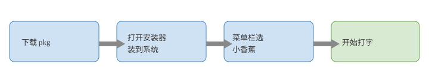

小香蕉 macOS
首页
简介
入门
下载与安装
说明书
常见问题
方案与数据
方案包
用户数据
出厂数据
配置
皮肤与定制
语言模型
发布
安装包
更新频道
macOS 文档
Windows 文档
Android 文档
iOS 文档
入门

安装四步
打开
bAnAnA-1.1.2.5.pkg
。
装完后应用在
/Library/Input Methods/bAnAnA.app
。
菜单栏输入法菜单选「小香蕉」。
拼音后空格或数字上屏。换皮肤、部署、检查更新都在输入法菜单。
示意图：输入法菜单项